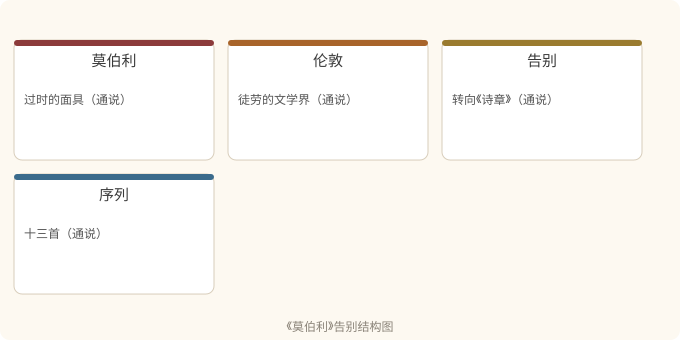

休·塞尔温·莫伯利
一、基本信息
| 作者 | 庞德 |
|---|---|
| 成书/出版 | 作者页注记：Britannica 列举（年份通说待核——1920说） Ezra Pound — Encyclopaedia Britannica（百科全书） |
| 国别/地区 | 美国 |
| 时代 | 近代 · 20世纪20年代 |
| 体裁 | 长诗 |
| 语言 | 英语 |

《莫伯利》告别结构图（主题·结构图）
二、创作背景
作者页注记：休·塞尔温·莫伯利——'（Britannica 列举）'。
Britannica：庞德——意象派与现代主义推动者（作者页交叉）。
题材（通说待核）：'莫伯利'——一个不合时宜的诗人的画像与自我告别。
三、内容脉络
（通说待核）十三首的序列：伦敦的'徒劳'与'卡利佩'。
（通说待核）'莫伯利'作为庞德的自我面具。
四、主要人物表
| 人物 | 身份 | 说明 |
|---|---|---|
| 莫伯利 | 过时诗人 | （通说待核） |
五、主题与艺术特点
- '与时代错位的诗人'（通说待核）。
- 伦敦文学界的讽刺（通说待核）。
- 告别与转向《诗章》（通说待核）。
六、影响与评论
- Britannica：列举（作者页注记）。
Ezra Pound — Encyclopaedia Britannica（百科全书） - Britannica：《诗章》为毕生巨作（作者页交叉）。
Ezra Pound — Encyclopaedia Britannica（百科全书）
七、阅读建议
难点
- 十三首的序列。
- '意象派'之后的语体（通说待核）。
- 《休·塞尔温·莫伯利》中译本（人民文学等——通说待核）。
- 英文原版（公有领域状态待核）。
庞德中期；与《诗章》对读。
八、待核实
- 1920年出版（John Lane说）待核。
- 十三首结构核对（通说）。
- 'E.P. ode'开篇细节待核。